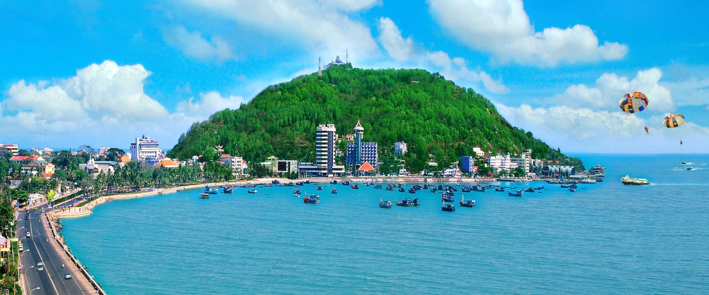
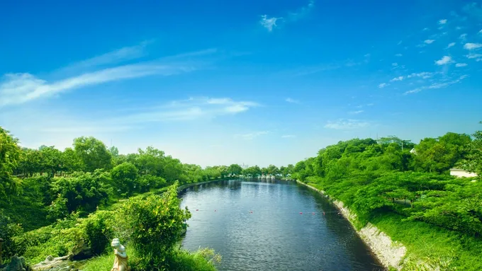
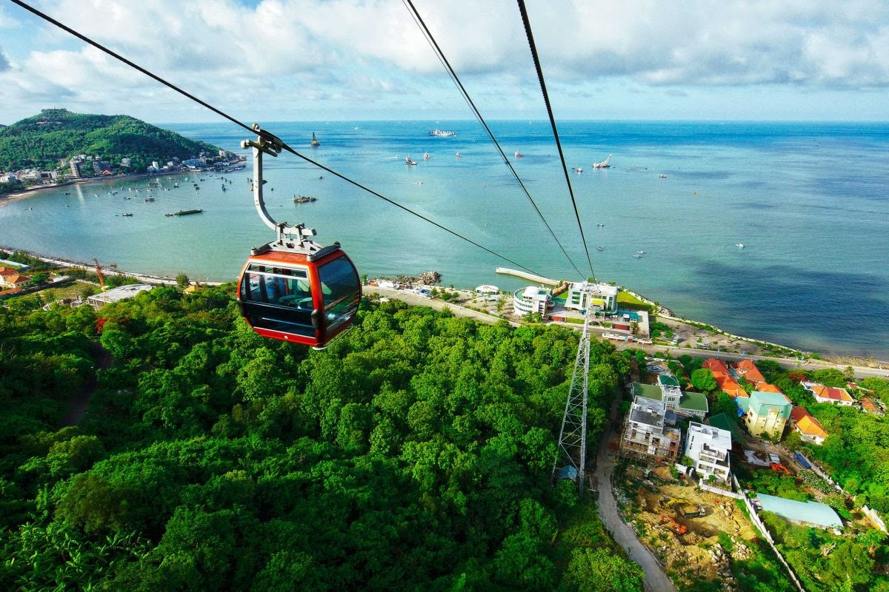
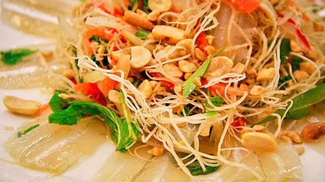
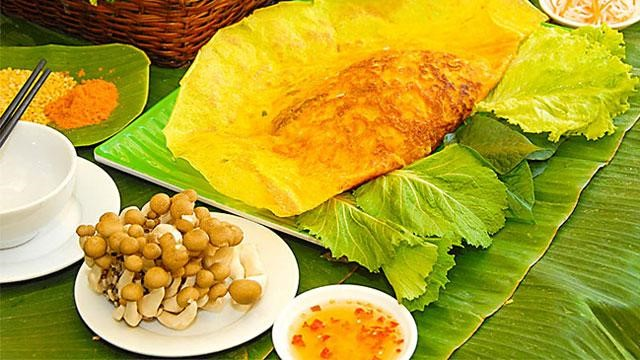
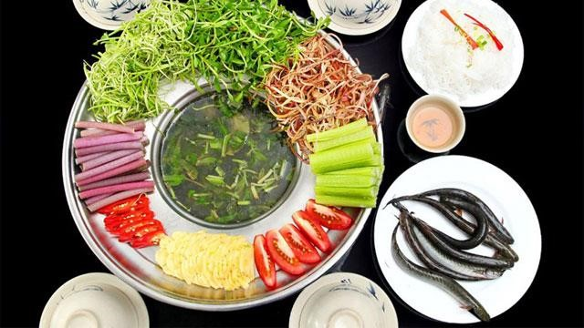
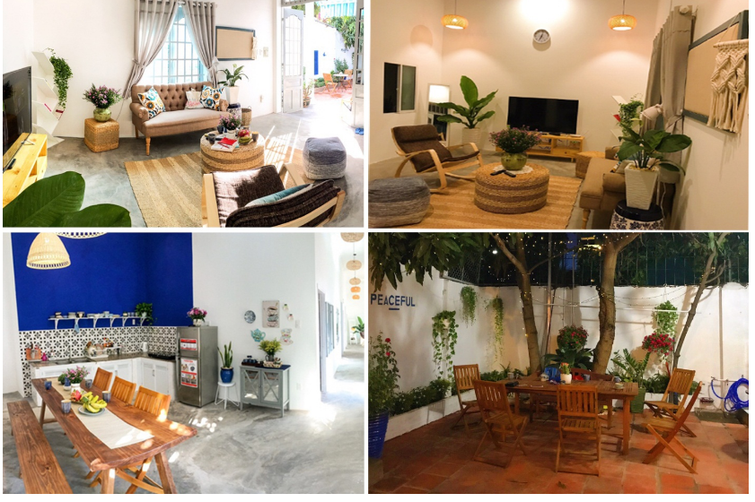

Giới thiệu
Phú Quốc là hòn đảo lớn nhất Việt Nam, nằm trong vịnh Thái Lan. Đảo Phú Quốc cùng với các đảo nhỏ hơn ở lân cận và quần đảo Thổ Chu nằm cách đó 55 hải lý về phía tây nam hợp thành thành phố Phú Quốc thuộc tỉnh Kiên Giang. Đây cũng là thành phố đảo đầu tiên của Việt Nam.Sở hữu những triền cát trắng trải dài, bãi biển trong vắt bên đại dương xanh thẳm, vườn quốc gia phong phú và những làng chài bình yên, đảo Phú Quốc (tỉnh Kiên Giang) được coi là lựa chọn lý tưởng cho du khách.Với 150 km đường bờ biển, Phú Quốc sở hữu nhiều bãi biển đẹp trải dài từ phía bắc đến phía nam. Đến đây, du khách sẽ bị cuốn hút trước vẻ đẹp đậm chất hoang sơ với sóng êm, gió lặng tại bãi Sao hay không gian trầm mặc kín đáo, biển xanh cát trắng tại bãi Khem. Du khách cũng có thể đến bãi Trường để đắm mình trong làn nước mát lạnh hay thả bộ chân trần trên cát, ngắm hoàng hôn buông dần trên biển. Đặc biệt, với cảnh quan nên thơ, trữ tình, cát vàng tự nhiên, rừng già đại thụ lan tận sát biển cùng hệ sinh thái rừng ngập mặn tuyệt đẹp tại các cửa sông nhỏ, bãi Dài đứng đầu danh sách các bãi biển tiềm ẩn được các hãng thông tấn cũng như du khách nước ngoài đánh giá và bình chọn là một trong 5 bãi biển đẹp nhất thế giới. Ngoài ra, các bãi Gành Dầu, Ông Lang, Vũng Bầu, Cửa Cạn hay hòn Móng Tay, Đồi Mồi, hòn Thơm, hòn Dăm… cũng rất hấp dẫn du khách. Đây là địa điểm lý tưởng cho các hoạt động tắm biển, du thuyền, câu cá, câu mực, lặn biển ngắm san hô, các môn thể thao nước, dã ngoại, khám phá đảo…

Các địa điểm văn hóa hay khu vui chơi di tích
1. Côn Đảo:
Địa chỉ:Côn Đảo là một quần đảo nằm ngoài khơi biển Nam Bộ thuộc Biển Đông của Việt Nam, cách Vũng Tàu 97 hải lý, cách Sóc Trăng 40 hải lý.
Sở hữu tổng diện tích 76km2, Côn Đảo là tập hợp của 16 hòn đảo lớn nhỏ được hình thành bởi những dãy núi đá granit nối dài từ Đông Bắc đến Tây Nam. Côn Đảo (hay Côn Sơn, Côn Lôn) là đảo lớn nhất, với đỉnh núi Thánh Giá cao tận 577m; Hòn Trứng Lớn và Hòn Trứng Nhỏ là hai đảo xa nhất về phía Tây, vừa được sáp nhập vào năm 1995. Trong thời kỳ Pháp Thuộc, Nhà Tù Côn Đảo là nơi lưu đày và giam giữ tù nhân có quy mô lớn bậc nhất Đông Dương. Cho đến tận ngày nay, hình ảnh “chuồng cọp” cùng nhiều hình thức tra tấn phi nhân tính tại Nhà Tù Côn Đảo vẫn là bằng chứng đanh thép về tội ác chiến tranh.Bỏ lại ký ức tăm tối phía sau, Côn Đảo của kỷ nguyên mới hiện ra đầy sức sống và “hồn thơ” với đường bờ biển dài ngập tràn nắng ấm, bãi đá tảng ngày đêm đón sóng bạc đầu. Núi rừng và các khu bảo tồn thiên nhiên khoác lên người chiếc áo rực rỡ, liên tục đổi màu theo tháng năm. Không quá toàn mỹ, vẻ đẹp của Côn Đảo đi vào lòng du khách theo cách mộc mạc, chân chất mà khó quên.
2. Tượng Đức Chúa dang tay
Địa chỉ: Nằm ở Thùy Vân, Phường 2, thành phố Vũng Tàu, Bà Rịa – Vũng Tàu
Tượng Chúa Kito hay còn gọi là tượng Chúa dang tay, là một trong những điểm tham quan Vũng Tàu nổi tiếng được rất nhiều du khách ghé thăm. Nằm trên đỉnh núi Nhỏ, thành phố Vũng Tàu, tượng được xây dựng vào năm 1974. Tượng Chúa Kito có chiều cao 32m, sải tay dài 18,3m đứng trên độ cao 170m, với hướng nhìn ra biển tuyệt đẹp, bên trong là 133 bậc thang lên tận 2 tay của tượng. Đứng ở đây, du khách có thể phóng tầm mắt ra xa, ngắm quang cảnh rộng lớn.Dù chỉ là bức tượng được xây nên từ bê tông cốt thép, nhưng những chi tiết thuộc về thẩm mỹ và nghệ thuật như tư thế đứng, nét mặt, thần thái, trang phục… đều được thể hiện hết sức sinh động, mềm mại và đầy sức sáng tạo.Tượng Chúa Kitô có thể được coi như phiên bản, có nét tương đồng với Tượng Chúa Kitô cao hơn 2m tại thành phố Rio de Janeiro của Brazil – một trong những bức tượng lớn nhất Châu Á.
3. Khu du lịch Hồ Mây

Địa chỉ: 1a Trần Phú, Phường 1, Thành phố Vũng Tàu, Bà Rịa - Vũng Tàu
Cách Sài Gòn khoảng 100 cây số về phía Đông, Hồ Mây được xem là tổ hợp du lịch toàn diện và nổi tiếng nhất ở thành phố biển Vũng Tàu. Nằm ở độ cao hơn 210m trên Núi Lớn, Khu du lịch Hồ Mây có khí hậu ôn hoà, trong lành, quanh năm mát mẻ. Từ đây, bạn có thể nhìn ngắm một Vũng Tàu đa diện, với vẻ đẹp hòa trộn giữa núi rừng trù phú và đô thị sầm uất. Nhằm đáp ứng nhu cầu vi vu đa dạng của du khách, Hồ Mây Park được chia thành nhiều khu vực có chủ đề riêng biệt. Dù muốn thử thách bản thân với trò chơi cảm giác mạnh, đi công viên nước hay vãn cảnh chùa, bạn đều có được trải nghiệm ưng ý nhất ở đây. Đó cũng là lý do mà nhiều năm trở lại đây, Công viên Hồ Mây đã trở thành điểm đến yêu thích của hội xê dịch, từ người đi du lịch một mình đến các cặp đôi, gia đình trẻ.

Ẩm thực
1. Gỏi Cá Mai Vũng Tàu
Du lịch biển mà chưa được thưởng món đặc sản thơm ngon gỏi cá mai thì quả là một điều vô cùng thiếu sót.

Để làm ra một đĩa gỏi cá mai ngon, một công đoạn quan trọng phải chú ý đến là việc chọn nguyên liệu cá tươi còn sót nhảy lăn tăn. Tiếp đến người nấu sẽ đem cá đi bóp chanh, ướp gia vị sao cho vừa ăn rồi trộn với các loại rau làm gỏi như rau răm, hành, húng… cuối cùng rắc thêm đậu phộng rang vàng giòn phía trên để tăng thêm sự thơm ngon hấp dẫn người dùng.
Thịt cá mai trong, lại giòn dai, chế biến thành các món ăn như lẩu và gỏi rất thơm và thanh mát chứ không tanh. Cũng chính vì lẽ đó, khi đã một lần dùng thử món gỏi cá mai thực khách sẽ nhớ mãi cái mùi vị thơm ngon khó quên của món ăn đặc trưng của quê hương miền biển này.
2. Bánh Xèo Long Hải
Về Vũng Tàu, ghé qua Long Hải nhất định phải dừng chân ăn thử món bánh thơm ngon đặc trưng mang một mùi vị rất riêng khó lẫn vào đâu được chính là bánh xèo Long Hải.

Bánh xèo là thứ quà quê rất đỗi quen thuộc với nhiều người, nhưng cũng rất lạ lẫm rất riêng của người Long Hải
Thường bánh xèo được làm từ những nguyên liệu chính như bột gạo, nhân tôm, thịt, giá. Ở đây, bánh xèo Long Hải còn có thêm hương vị đặc biệt bởi vỏ bánh người ta còn pha thêm trứng gà để tăng độ giòn và bên trong nhân còn có hành tây cùng mộc nhĩ. Nhưng nếu xét đến nét đặc trưng nhất vẫn phải kể đến bí quyết chế biến rất riêng của người dân nơi đây.
Và bởi đâu mà món bánh xèo Long Hải lại được sự yêu mến của biết bao du khách gần xa đến thế. Đó là sự hòa quyên của rất nhiều các yếu tố, vỏ bánh giòn thơm phức, vàng ươm, nhân bên trong đậm đà tươi ngon đủ vị. Và còn một điều không thể bỏ sót đó chính là nước chấm dùng chung với bánh. Một sự kết hợp hòa quyện mằn mặn, chua ngọt pha tí cay cay cũng đủ làm con người ta ngây ngất lại còn kèm theo đồ chua được muối khéo léo. Tất cả những thứ ấy đều có trong món đặc sản của vùng Long Hải này thì chẳng trách sao lại làm mê đắm trái tim của nhiều du khách đến thế.
3. Lẩu Súng Phước Hải
Để có được nồi nước lẩu ngon phải trải qua những công đoạn khéo léo của bàn tay người đầu bếp và những gia vị đi kèm khá phức tạp. Nước lẩu nấu xong sẽ bóc khói nghi ngút với hương thơm ngào ngạt từ sự hòa quyện của đủ các mùi vị chua ngọt của me đường, nồng nàn sả tỏi cùng béo bùi của cá.
Tuy có rất nhiều loại rau để ăn kèm với lẩu nhưng đặc trưng chủ yếu nhất vẫn phải kể đến rau súng. Và cũng chính vì thế mà người dân ở đây dùng cái tên dân dã của loài hoa này để đặt tên cho món ăn. Nguyên liệu chính của lẩu súng Phước Hải được lựa chọn từ những loài cá tươi như: cá đuối, cá dứa, cá bớp, cá bông lau, cá ngót,… nhưng ngon nhất ngon nhất là thiều. Tuy nhiên, ngày nay loại cá này lại rất hiếm vậy nên nó không được sử dụng phổ biến rộng rãi.
Để tạo sự tươi mới cho những bữa ăn gia đình ấm áp, ta có thể thay vào đó bằng một nồi lẩu thơm ngon đủ chất dinh dưỡng từ rau cá. Ngày mưa mà cùng quây quần bên nhau thưởng thức món ăn đặc sản này quả là điều vô cùng thú vị đúng không nào.

Lịch sử
Là vùng đất có những của biển kín gió rất thuận lợi về giao thông đường thủy, Bà Rịa – Vũng Tàu là nơi lưu dân người Việt từ miền Trung vào khai phá sớm nhất Nam Bộ, khoảng thế kỷ XVII. Từ đó cho đến giữa thế kỷ XIX, bộ mặt của vùng đất Bà Rịa – Vũng Tàu đã có những thay đổi sâu sắc. Từ một nơi hoang vu, biển cả mênh mông, đồi núi, rừng rậm đã trở thành ruộng đồng, làng mạc trù phú. Tài nguyên đất, rừng, biển đã được khai thác để phục vụ cuộc sống ngày càng sung túc hơn của con người. Quá trình khẩn hoang lập ấp cũng là thời gian hình thành các tín ngưỡng làm chỗ dựa về tinh thần, vừa đem đến cho cư dân. Nơi đây từ rất sớm, tín ngưỡng dân gian vừa là chỗ dựa tinh thần, vừa đem đến cho các cư dân miền biển Bà Rịa – Vũng Tàu một không gian hội hè sau những ngày lao động mưu sinh.
Review khách sạn, homestay
1. Peaceful House
Địa chỉ: 53/21 Lê Hồng Phong, Phường 7, Thành phố Vũng Tàu
Đây là một trong những homestay Bà Rịa – Vũng Tàu được các du khách yêu thích nhất. Homestay này rất thích hợp cho các bạn ngại đi xa, chỉ cần 5 phút đi bộ là bạn đã có thể đặt chân đến Bãi Trước và 10 phút đi bộ để đến được Bãi Sau. Ngoài ra, từ đây bạn cũng có thể di chuyển đến các địa điểm khác như Bạch Dinh, cáp treo Hồ Mây, Ngọn Hải Đăng,… một cách dễ dàng.
Giống như tên gọi của mình, Peaceful House thu hút các du khách bởi vẻ đẹp bình dị và thuần khiết của mình. Khi đến với Peaceful, các du khách đều cảm thấy ngỡ ngàng bởi Peaceful là sự kết hợp hài hòa giữa các yếu tố vừa dễ thương, vừa ấm áp nhưng vẫn mang sự độc đáo riêng biệt.
Peaceful được chăm chút kỹ lưỡng từ những nhành cây, chậu hoa, sân vườn, khiến ai cũng bị mê hoặc bởi góc sân bình yên cùng với cỏ cây xanh mát. Bên cạnh đó, chủ nhà còn bố trí những bộ bàn ghế gỗ ở khoảng sân để các du khách có thể thảnh thơi nhâm nhi những ly cà phê hay tách trà vào buổi sáng sớm.

2. Mountain Light:
Địa chỉ: 28A Hải Đăng, Phường 2, Thành phố Vũng Tàu
Mountain Light tọa lạc tại 1 vị trí khá đắc địa, do đó nó không chỉ là một nơi nghỉ dưỡng đơn thuần mà nó còn là địa điểm vui chơi giải trí thú vị cho các du khách. Sát Mountain Light là quán Sơn Đăng café, một trong những quán cà phê có view đẹp nhất tại thành phố Vũng Tàu. Ngoài ra, xung quanh Mountain Light còn có rất nhiều nhà hàng, quán ăn ngon chắc chắn sẽ làm thỏa mãn những tâm hồn ăn uống.
Khi đến với Mountain Light, du khách sẽ được trải nghiệm không gian vô cùng sang trọng và tiện nghi, đồng thời có thể ngắm nhìn toàn cảnh thành phố rực rỡ khi bình minh lên và huyền ảo, lung linh khi hoàng hôn buông xuống. Với khoảng sân vườn rộng lớn tràn ngập màu sắc từ thiên nhiên sẽ khiến cho bất kỳ ai ghé thăm đều cảm nhận được sự gần gũi, giúp xua tan những nỗi phiền muộn của cuộc sống.
3. Bạch Cúc Homestay
Địa chỉ: Tổ 19, Khu phố Hải Tân, Thị trấn Long Hải, huyện Long Điền, Bà Rịa – Vũng Tàu.
Với lối thiết kế đan xen giữa phong cách nhà sàn của người dân Tây Nguyên cùng với những lớp mái theo phong cách Nhật Bản, Bạch Cúc Homestay đem đến những căn nhà sàn gỗ trong một khu vườn nhỏ yên tĩnh tại Long Hải. Tại đây, du khách có thể hòa mình vào không gian thiên nhiên ngay chính tại homestay cũng như thưởng thức bình minh đẹp hoang sơ tại bãi biển Long Hải vào buổi sáng sớm.Không được trang bị đầy đủ tiện nghi như những homestay Bà Rịa – Vũng Tàu khác, nhưng Bạch Cúc Homestay sẽ mang đến cho du khách những trải nghiệm tuyệt vời khi được tận hưởng bầu không khí trong lành cùng những cơn gió biển mát lạnh thổi tới.Homestay này rất phù hợp cho nhóm bạn hoặc nhóm gia đình nhỏ, họ có thể cùng ngồi trò chuyện, chia sẻ những cảm xúc và cùng nhau nấu một bữa cơm không khác gì ở nhà.

Là một trong số những homestay dành cho gia đình có view đẹp nhất ở Phú Quốc. Phú Quốc Ecolodge có khoảng không gian vườn rộng thoáng mát bát có thể ngồi đó uống một tách trà và tận hưởng cảm giác thư thái.Không gian bên ngoài có view tuyệt đẹp và đầy lãng mạn. Ở đây buổi tối có đốt lửa trại và tổ chức tiệc BBQ cho du khách tận hưởng cảm giác ấm ấp bên gia đình.Phú Quốc Ecolodge có 10 bungalow được thiết kế chủ yếu bằng gỗ được bày trí đơn giản, nhẹ nhàng nhưng không kém phần sang trọng. Bên trong mỗi phòng đều có phòng tắm riêng và khu vệ sinh khép kín. Xây dựng cửa kính lớn hướng ra sân tạo nên không gian xanh thoải mái, thư thái mỗi khi thức dậy.